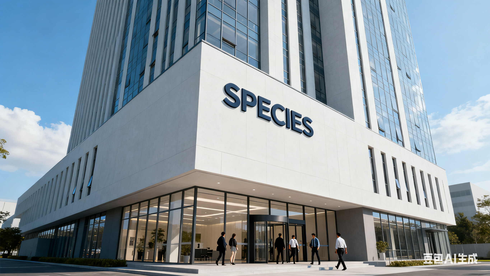

ID：ghost001楼层：1楼
首帖：讨论夜色主题与怪物设定的融合。希望通过深海蓝与蓝绿青的配色，提升氛围与沉浸感。欢迎补充视觉规范、交互细节与内容组织建议。

时间：2024-10-21 20:18
ID：readerA楼层：2楼
个人感觉夜色配色与论坛的可读性需要权衡。可考虑加大对比度、在标题与按钮处使用明黄色强调，同时正文维持柔和的青蓝。

时间：2024-10-21 21:02
ID：mod_alpha楼层：3楼
建议将首页导航与帖子列表的层次更清晰：导航采用明黄突出激活态，列表卡片保持半透明深色底与白字，提升可读性。

时间：2024-10-21 22:10